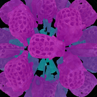

Research
-

Novel-View Acoustic Synthesis from 3D Reconstructed Rooms
Interspeech, 2024
project page · arXiv · code · demo · headset recommended
Estimating spatial sound in reconstructed scenes by combining blind audio recordings with 3D information.
-


Neural Kaleidoscopic Space Sculpting
IEEE/CVF Conference on Computer Vision and Pattern Recognition (CVPR), 2023
project page · paper · video · code · bibtex
Full-surround 3D reconstructions from a single kaleidoscopic image via neural surface sculpting.
-


Kaleidoscopic Structured Light
ACM Transactions on Graphics (Proc. SIGGRAPH Asia), 2021
project page · paper · video · code · bibtex
Structured light with hundreds of virtual projectors and cameras for full-surround scanning.
-


Convolutional Approximations to the General Non-Line-of-Sight Imaging Operator
IEEE/CVF International Conference on Computer Vision (ICCV), 2019 (Oral)
project page · paper · supplement · code · bibtex
A convolutional perspective of the NLOS operator enabling efficient reconstruction.
-


Occlusion-Aware Video Deblurring with a New Layered Blur Model
Tech report, 2016
Layered blur model handling occlusions for video deblurring.
-

Reduced Illumination Patterns for Acquisition of Specular and Diffuse Normal Maps
ACM SIGGRAPH Asia Posters, 2016
Polarization-based normal map acquisition with fewer patterns.
-

IEEE International Conference on Computer Vision (ICCV), 2013
Joint estimation of latent image, motion, and soft segmentation for dynamic scenes.
Professional Activities
- Area Chair, CVPR (2026)
- Area Chair, ICML (2025)
- Area Chair, NeurIPS (2024, 2025)
- Program Committee, ICCP (2023, 2024, 2025)
- Reviewer, CVPR, ICCV, ECCV, BMVC, ICLR, NeurIPS, SIGGRAPH, SIGGRAPH Asia, TIP, TCI
Teaching
- Teaching Assistant, 15-463, 15-663, 15-862 Computational Photography, Fall 2020 (CMU)
- Teaching Assistant, 18-290 Signals and Systems, Spring 2019 & Spring 2020 (CMU)